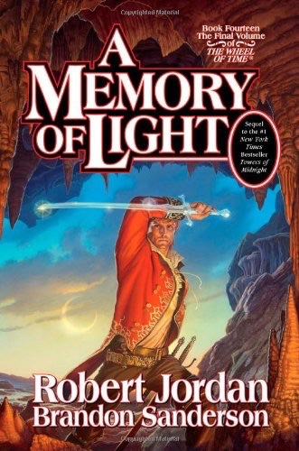

|
|  |
A Memory of Light
|
Robert Jordan, Brandon Sanderson
|
 |
Fiction, Epic, Fantasy
|
Tor Books
|
Since 1990, when Robert Jordan's The Wheel of Time® burst on the world with its first book, "The Eye of the World," readers have been anticipating the final scenes of this extraordinary saga, which has sold over forty million copies in over thirty languages.
The Wheel of Time turns and Ages come and go, leaving memories that become legend. Legend fades to myth, and even myth is long forgotten when the Age that gave it birth returns again. In the Third Age, an Age of Prophecy, the World and Time themselves hang in the balance. What was, what will be, and what is, may yet fall under the Shadow.
When Robert Jordan died in 2007, all feared that these concluding scenes would never be written. But working from notes and partials left by Jordan, established fantasy writer Brandon Sanderson stepped in to complete the masterwork. With "The Gathering Storm" (Book 12) and "Towers of Midnight "(Book 13) behind him, both of which were # 1 "New York Times" hardcover bestsellers, Sanderson now re-creates the vision that Robert Jordan left behind.
Edited by Jordan's widow, who edited all of Jordan's books, "A Memory of Light" will delight, enthrall, and deeply satisfy all of Jordan's legions of readers.
The Wheel of Time turns, and Ages come and pass.
What was, what will be, and what is,
may yet fall under the Shadow.
"Let the Dragon ride again on the winds of time."
The Wheel of Time®
"New Spring: The Novel"
#1 "The Eye of the World"
#2 "The Great Hunt"
#3 "The Dragon Reborn"
#4 "The Shadow Rising"
#5 "The Fires of Heaven"
#6 "Lord of Chaos"
#7 "A Crown of Swords"
#8 "The Path of Daggers"
#9 "Winter's Heart"
#10 "Crossroads of Twilight"
#11 "Knife of Dreams"
By Robert Jordan and Brandon Sanderson
#12 "The Gathering Storm"
#13 "Towers of Midnight"
#14 "A Memory of Light"
By Robert Jordan and Teresa Patterson
"The World of Robert Jordan's The Wheel of Time"
By Robert Jordan, Harriet McDougal, Alan Romanczuk, and Maria Simons
"The Wheel of Time Companion"
|
|
|
|